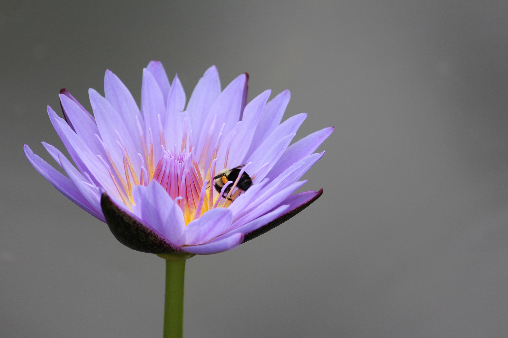
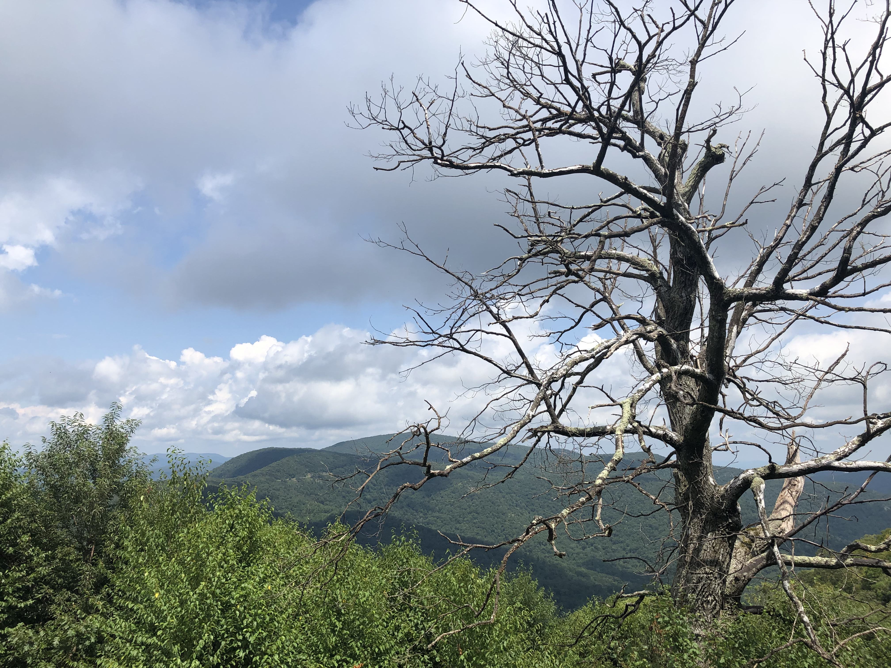

ABOUT
Elizabeth Thakkar
I wasn't one of those people who always knew
exactly what I wanted to do with my life.
I graduated with a Bachelor of Science in Biology
in 2011, with no idea what the future would hold.
The next year, I found my calling when I began
volunteering for the National Park Service at
Rock Creek Park in Washington, DC.
Since that time, I have worked in multiple parks
from regional to state to federal. This led to my
obsession with environmental education and
documenting nature through photography.
Currently, I am pursueing a degree in graphic
design while working to develop environmental,
recreation and park-based interpretive media.